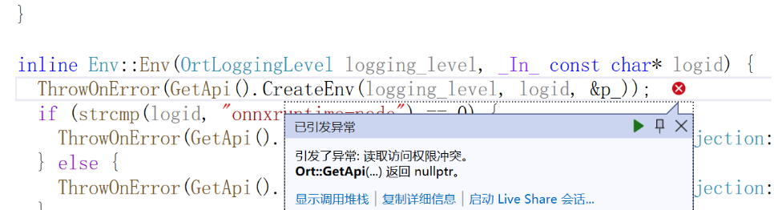

Error Handling 本文记录了本人在C++程序开发过程中遇到的一些报错和解决方案，用以备忘。 Onnxruntime¶ Ort::GetApi(...)返回nullprt¶  这个问题一般是.dll文件冲突导致的，是WIN10或WIN11特有的问题。原因在于：WIN10或WIN11的system32下自带一个onnxruntime.dll，优先级高于环境变量添加的路径。用户可以通过修改权限或直接将onnxruntime.dll拷贝到.exe文件下。 Reference: 报错信息如下：引发了异常: 读取访问权限冲突。Ort::GetApi(...) 返回 nullptr。_引发了异常: 读取访问权限冲突。 ort::getapi(...) 返回 nullptr。-CSDN博客